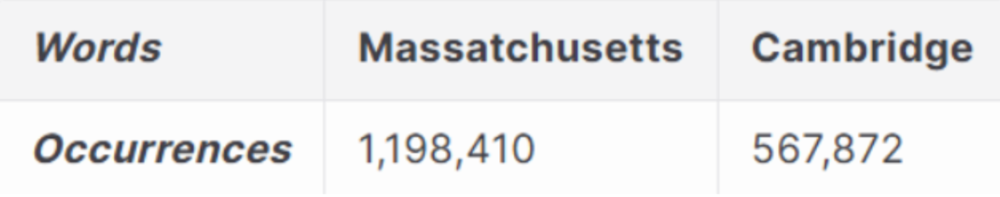
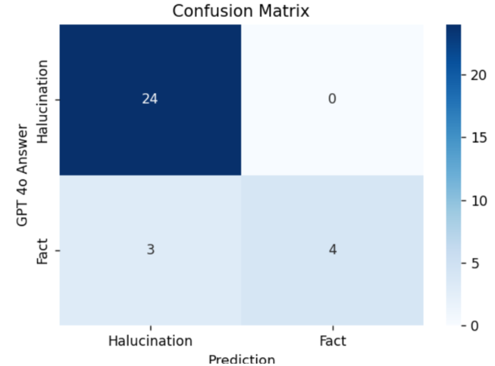

LLM reliability · Research project
LLM Lie Detection
One problem with using LLMs, or large language models, for research or as search engines is their tendency to hallucinate or not know answers. This is because their knowledge of facts is often limited by their training data. Because of this problem, we set out to find a metric that can be used to detect whether an LLM is likely to fail.
We hypothesized that the output quality of the model when given a query would depend on the occurrence of the subject of the query in the training data. Ultimately, we wanted to test the correlation between the LLM being correct and the number of occurrences of the subject in the training data.
To get a list of instances where LLMs failed, we decided to use the SimpleQA test set from OpenAI to identify LLM failures, as it contains many instances where an LLM would get the wrong answer. This dataset consists of simple trivia questions like:
Question: Who received the IEEE Frank Rosenblatt Award in 2010?
Answer: Michio Sugeno
To get the occurrences of the query subject inside the training data, we used existing software, Infini-gram, which is used to navigate open-source datasets for LLMs. We used the OLMo 2 32B Instruct dataset for our investigation. Infini-gram has a web interface as well as an API. We used this to get the counts for a subject, for example.
The goal of condensing the query was to get a small string of words that contained information about the question and the answer.
Query: What's the name of the women's liberal arts college in Cambridge, Massachusetts?
Answer: Radcliffe College
Query + Answer: Cambridge AND Radcliffe College
Note: The AND means that Cambridge and Radcliffe College do not have to appear consecutively, but just in the same document.
The first thing we needed to do was strip the query of context—words like “what's” or “the.” The only important information is the proper nouns, such as “Cambridge, Massachusetts” and “Radcliffe College.” While this example was rather short, there were other queries that had more proper nouns that were not as useful. One way we dealt with this problem was to pick the proper noun in the query that appeared the least in the corpus. This way, if this proper noun intersected with the answer, there was probably a relationship inside the training data. For example:

Since the occurrences of “Cambridge” in the corpus are a lot lower than the occurrences of “Massachusetts,” the question would just be shortened to “Cambridge.” Using this system, the final query would be:
Cambridge AND Radcliffe College
This results in a count of 24,142 occurrences in the training data.
The results were promising. We ran our algorithm on 30 question-and-answer pairs to predict whether an LLM would likely produce misinformation. For the example LLM, we chose GPT-4o, and we quizzed it on 30 question-and-answer pairs from our dataset, noting whether it got the answers correct or not. After this, we ran our algorithm to check the number of occurrences of the question subject + answer in the training data. If there were fewer than 150 occurrences in the training data, it was highly unlikely that the LLM would get it right and would likely hallucinate, so we used this to classify hallucinations.

From running this experiment, we found that the algorithm correctly predicted whether an LLM would get the answer right or wrong 90% of the time. The confusion matrix above represents the results.
This test was run on only 30 question-and-answer pairs and would need to be run on more to determine if this is a good metric to use in the future. However, it has shown promise in recognizing hallucinations, as it had no false positives.